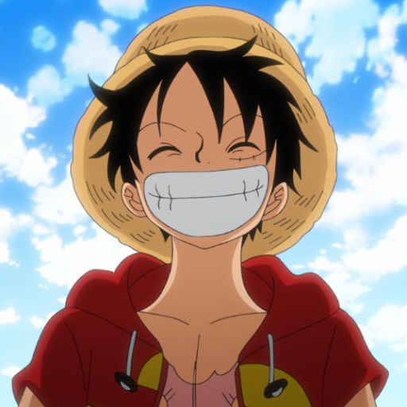
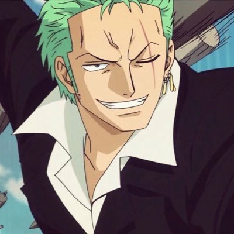
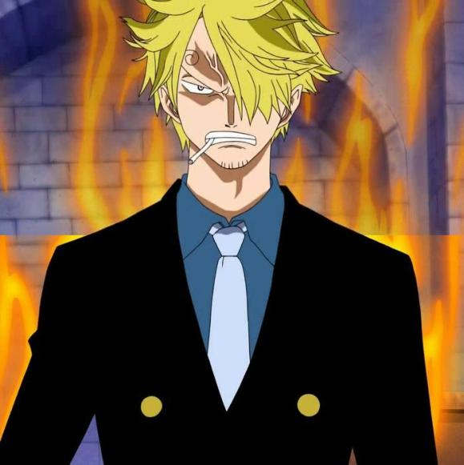
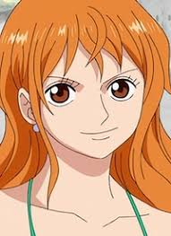
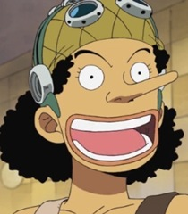
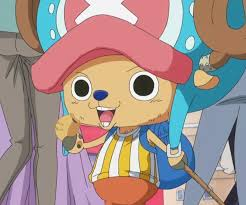
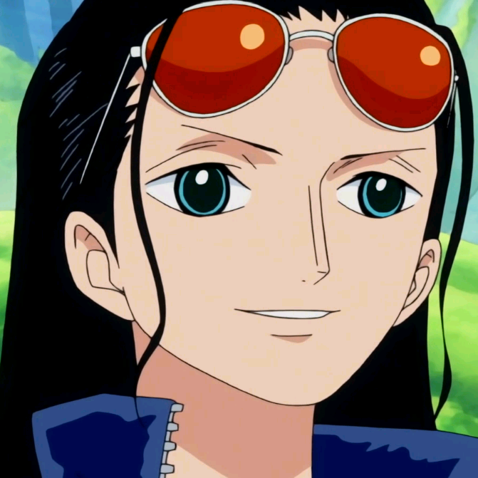
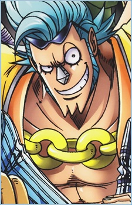
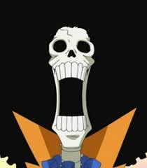
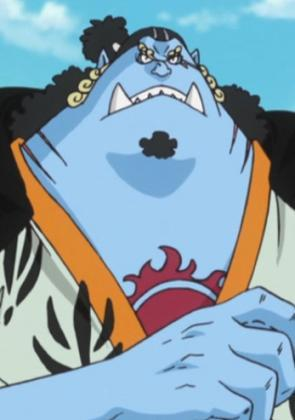

| MAIN CHARACTERS! |
| Monkey D. Luffy |
 |
also known as "Straw Hat Luffy" and commonly as "Straw Hat", is the main protagonist of the manga and anime, One Piece. He is the founder and captain of the Straw Hat Pirates, as well as one of its top three fighters. His lifelong dream is to become the Pirate King by finding the legendary treasure left behind by the late Pirate King, Gol D. Roger. He believes that being Pirate King means having the most freedom in the world. |
| Roronoa Zoro |
 |
also known as "Pirate Hunter" Zoro, is a pirate and a former bounty hunter. He was the first member to join the Straw Hat Pirates, and, to date, is considered the largest threat and most dangerous member in the crew after Luffy. His fame as a master swordsman and his great strength, along with the actions of his captain, sometimes led others to believe he was the true captain of the crew before he obtained his first bounty.He is one of the top three fighters in the crew alongside Luffy and Sanji, and his dream is to become the greatest swordsman in the world. |
| Vinsmoke Sanji |
 |
most commonly known by his moniker "Black Leg" Sanji, is a pirate and the cook of the Straw Hat Pirates, as well as the former sous chef of the Baratie. He is also the third son of the Vinsmoke Family, thus making him a prince of the Germa Kingdom, until he officially denounced them once again.He is officially the fifth member of the crew and the fourth to join, doing so at the end of the Baratie Arc. Since he was born in North Blue, he is the first Straw Hat not to originate from East Blue. He is one of the Monster Trio in the crew, alongside Luffy and Zoro. His dream is to find the rumored chef's paradise, All Blue, which is where East Blue, West Blue, North Blue, and South Blue meet, along with their wildlife. |
| Nami |
 |
"Cat Burglar" Nami is a pirate and the navigator of the Straw Hat Pirates. She was the third member of the crew and the second to join, doing so during the Orange Town Arc. She is the adoptive sister of Nojiko after the two were orphaned and taken in by Bell-mère.She was formerly a member of the Arlong Pirates and initially joined the Straw Hats in order to rob them for her real crew in order to buy back her village from Arlong, but joined the Straw Hats for real after they rebelled against and defeated Arlong. Her dream is to make a map of the entire world. |
| Usopp |
 |
"God" Usopp is a pirate and is the sniper of the Straw Hat Pirates, and the former captain of the Usopp Pirates. When Usopp was first introduced, he was often (comically) labeled as the "liar" of the Straw Hat Pirates, due to the "uso" (うそ) in his name meaning "lie" or "falsehood" . He was born in Syrup Village, and was first mentioned by Yasopp, his father. He was officially the third (unofficially fourth) member of the crew, and the third to join, and, including Nami and Robin, also the third to rejoin, doing so at the end of the Post-Enies Lobby Arc. His original bounty of Beli 30,000,000 was credited to his alias and alter-ego "Sogeking". |
| Tony Tony Chopper |
 |
Tony Tony Chopper, also known as "Cotton Candy Lover" Chopper, is the doctor of the Straw Hat Pirates.Chopper is a reindeer that ate the Hito Hito no Mi which is a devil fruit that allows its user to transform into a human hybrid or a human at will. He came from Drum Island where he learned how to be a doctor, which also makes him the only member of the Straw Hats who was born on the Grand Line. He is the sixth member of the crew and the fifth to join Luffy, as well as being the youngest member on board. |
| Nico Robin |
 |
Nico Robin, also known by her epithet "Devil Child" and the "Light of the Revolution", is the archaeologist of the Straw Hat Pirates.She was originally introduced as the vice president of Baroque Works and secondary antagonist of the Alabasta Saga, known as Miss All Sunday, before joining the Straw Hats. She is the seventh member of the crew, the sixth to join, and like Nami, is the second to rejoin, doing so near the end of the Enies Lobby Arc. Robin is also the first member to have once been an antagonist. She ate the Hana Hana no Mi. |
| Franky |
 |
"Iron Man" Franky is the shipwright for the Straw Hat Pirates. A cyborg from Water 7, he was originally the leader of the Franky Family, a group of ship dismantlers.He is originally from South Blue, but left 32 years ago as a four-year-old child. He was originally named "Cutty Flam" until he threw away his original name for his nickname per the request of Iceburg to hide his identity.Franky and his followers were originally enemies of the Straw Hats until circumstances forced them to become allies. At the request of the Franky Family, Franky decided to join the Straw Hats to fulfill his dream of creating and riding a ship capable of circumnavigating the world, the Thousand Sunny. He is the eighth member of the Straw Hat crew and the seventh to join Luffy's crew. |
| Brook |
 |
"Soul King" Brook is the musician of the Straw Hat Pirates. He is a skeleton that the Straw Hats found on board of a ghost ship after drifting into the Florian Triangle for 50 years. He is a Devil Fruit user who ate the Yomi Yomi no Mi, and is undead, having been brought back into a pseudo-immortal state because of its powers. He is the ninth member of the Straw Hat crew, and the eighth to join Luffy's crew, as well as being the oldest and the second tallest member on board. He is also one of the two swordsmen onboard their current ship, with the other being Roronoa Zoro. He fills the role of the long-awaited musician that Luffy had wanted for his crew ever since his journey began |
| Jinbe |
 |
"Knight of the Sea" Jinbe is a member of the Straw Hat Pirates, having served predominantly as a helmsman in his current capacity with them. As of now, he is officially the tenth member of the Straw Hat crew and the ninth to join Luffy's crew. He is a whale shark fishman who served as the second captain of the Sun Pirates after Fisher Tiger, and a former Shichibukai from 11 years ago until the Battle of Marineford two years ago. |